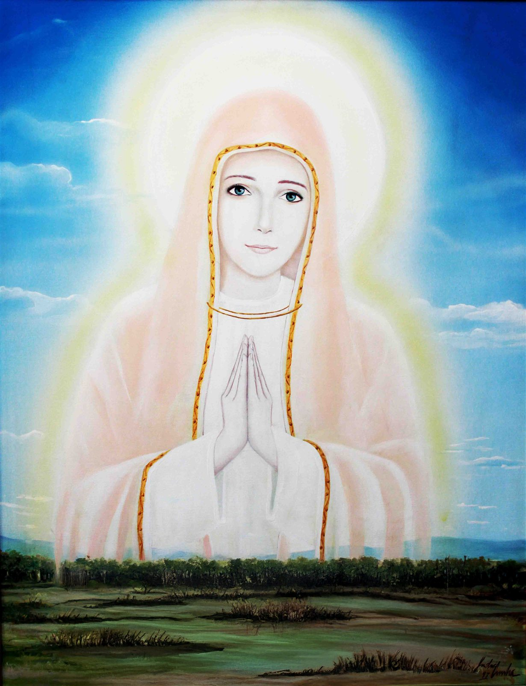

Deus Pai
A iniciativa é sempre de Deus.
Foi assim na criação do mundo, na salvação e no nascimento da nossa Comunidade. Ele dá o primeiro passo e faz aliança com o seu povo. A nós cabe responder.

O Sinal da Trindade
A iniciativa é sempre de Deus.
Foi assim na criação do mundo, na salvação e no nascimento da nossa Comunidade. Ele dá o primeiro passo e faz aliança com o seu povo. A nós cabe responder.
A aliança tem uma cruz no centro.
Em Jesus, Deus se faz próximo e firma conosco um laço que não se desfaz. Por isso a cruz está no coração do nosso ícone: ela nos lembra a quem pertencemos.
A chama que mantém tudo vivo.
É o Espírito quem acende e sustenta essa aliança em nós, dia após dia, e nos dá força para viver o que prometemos.
Três Pessoas, uma só aliança.
O consagrado da Comunidade leva no peito a cruz da Trindade, o ícone que nos identifica. Ela lembra a todos o compromisso assumido e a quem pertencemos. O compromisso mora no coração; o sinal o torna visível a cada dia. Também veneramos o ícone da Santíssima Trindade e o levamos para dentro de casa.

Todo mês, um itinerário espiritual para caminhar com a comunidade.
Ver os itinerários